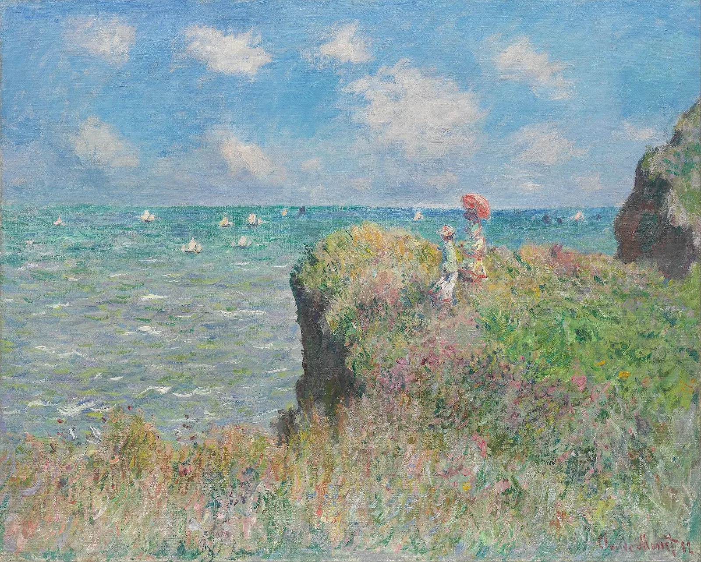
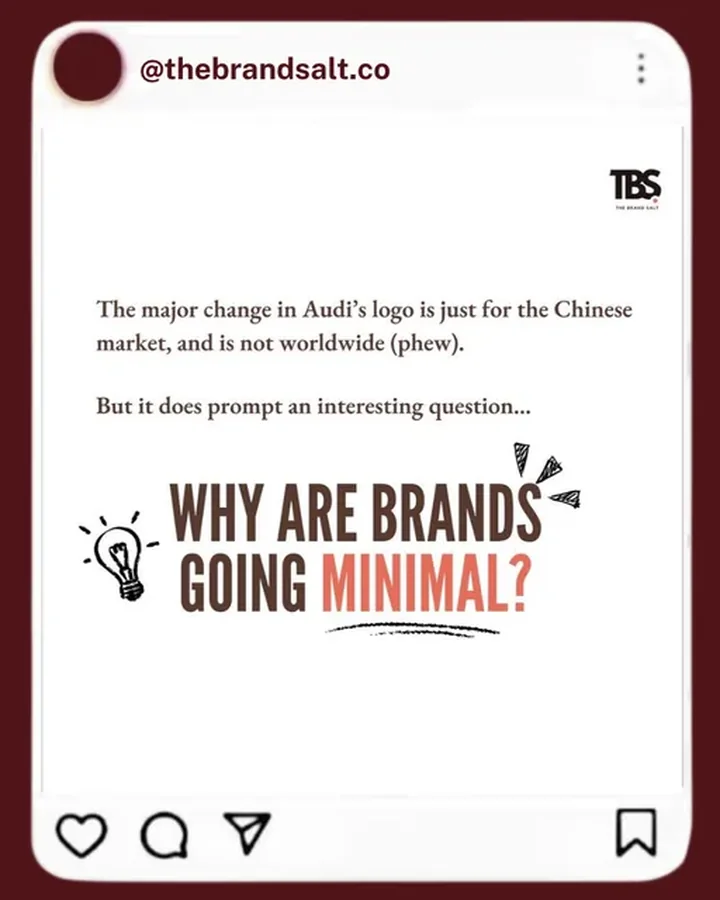
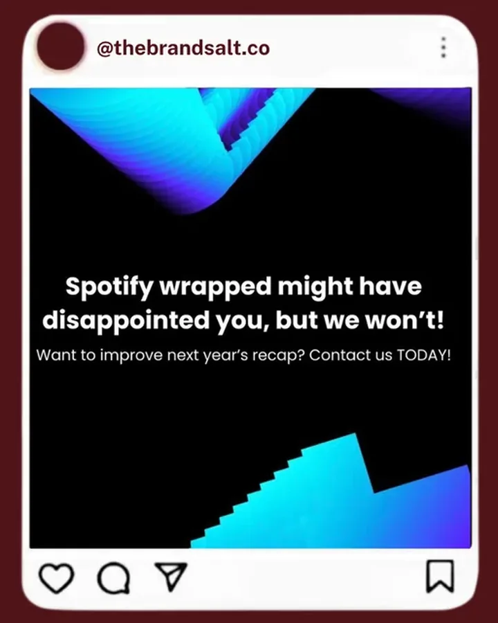
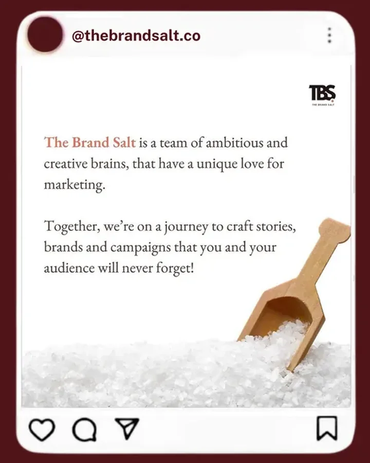
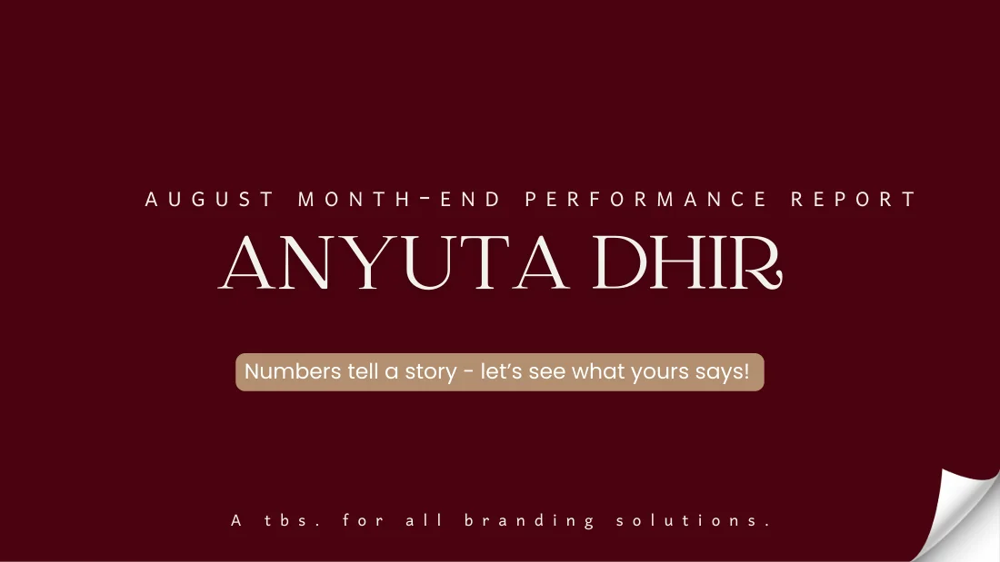
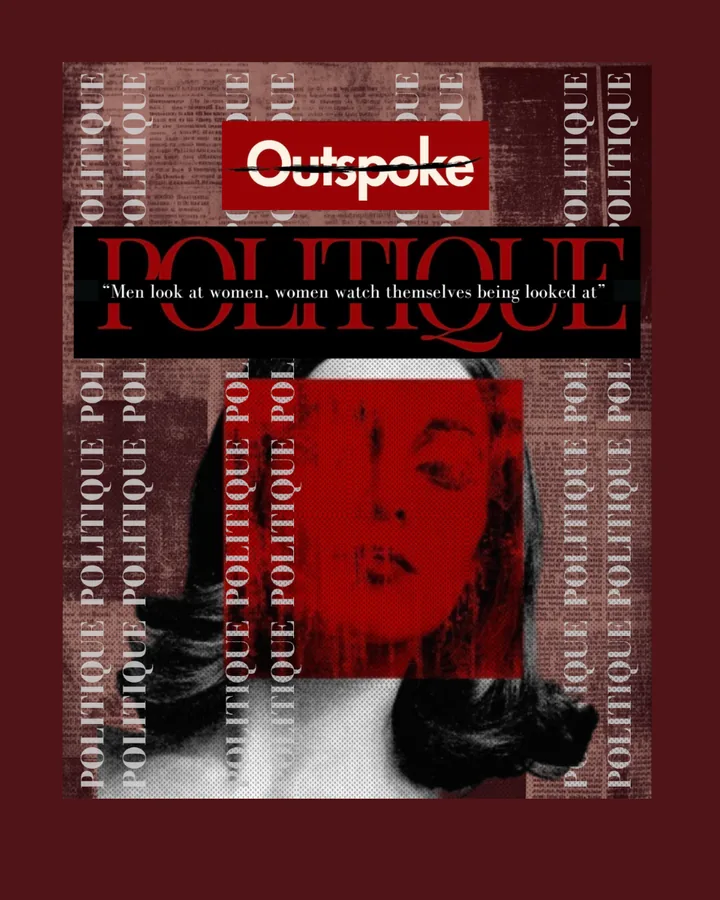
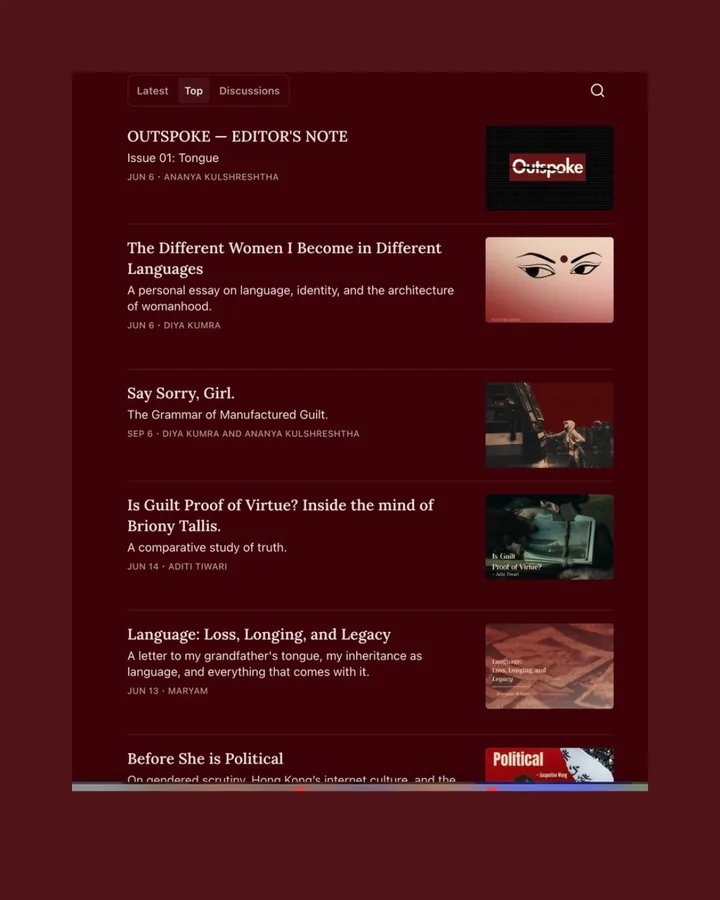
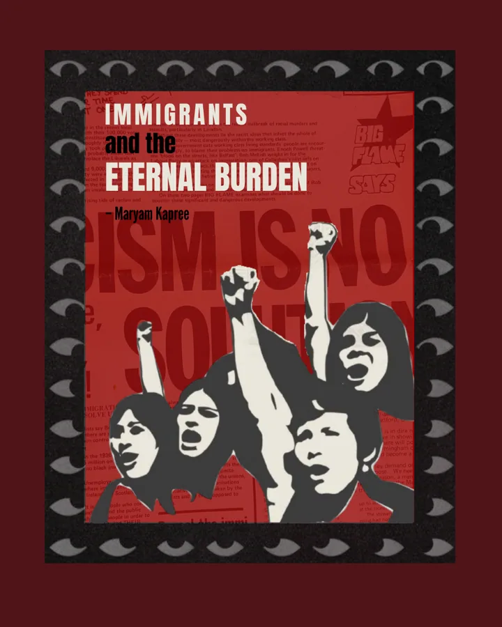
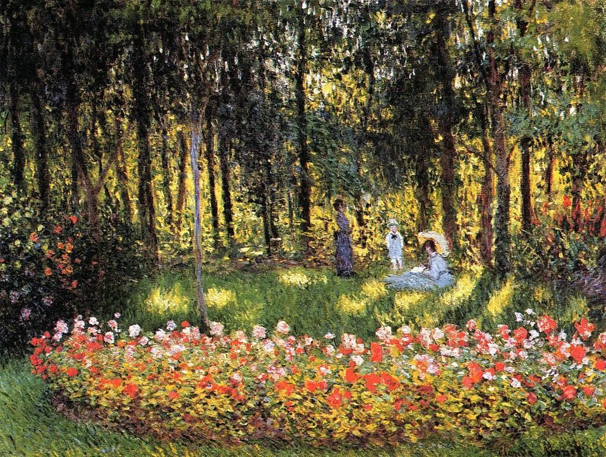

B2B strategy · Executive thought leadership · Creative direction
Social media
From manuscripts to media, I shape content for the people reading it.
You’ve built something worth talking about. I make sure it travels.
See the work
Five years, five accounts, one conviction: good social starts with a point of view.
- Client accounts managed
- 5+
- Campaign impressions
- 180K
- Posts a month
- 25+
- Team led at Hiraeth
- 70
- Monthly readers at Hiraeth
- 70K
- Engagement on TenterHook interviews
- 2.5×
06:40 · first light
The Brand Salt
Social-first content for a branding agency and its clients: ideation, filming, editing and publishing across three very different accounts.



From minimalism carousels to Spotify Wrapped-inspired posts and team introductions, my work at The Brand Salt involved a little bit of everything. I enjoyed experimenting with different formats and finding creative ways to bring ideas to life.
- Role
- Concept to publish
- Formats
- Static, carousel, reel
- Scope
- Multi-account coordination
09:15 · morning
TBS Clients
LinkedIn positioning for two specialists: a sustainable HR and boardroom leadership voice, and a cardiovascular researcher working on healthy ageing and women’s health.
Two very different areas of expertise, two different audiences. I worked on LinkedIn content for Anyuta Dhir and Dr Abhilasha Singh, adapting my writing to their individual voices and subjects.
- Role
- Profile, strategy, writing, scheduling
- Scope
- Two LinkedIn accounts
- Result
- Distinct voices, one standard
12:00 · high sun
Growth metrics
A month-end LinkedIn report for Anyuta Dhir: 249K+ impressions and 1,231 new followers in thirty days, with the strongest and weakest posts broken down.

- Impressions
- 249K+
- Followers gained
- 1,231
- Top post
- 180K+
Thirty days of content, measured: reach, follower growth, the post that carried the month and the one that did not. The report ends with what to do next.
Open the full report PDF copyA month of posts read against reach, follower growth and engagement, with the next steps at the end.
- Role
- Strategy, writing, reporting
- Scope
- Anyuta Dhir · August 2025
- Result
- 249K+ impressions, 1,231 followers
Source: TBS month-end performance report, August 2025.
15:30 · afternoon
Iconinc The Edge
Three years running the Instagram account for a Leeds student accommodation brand: concept, filming, editing and publishing, week after week.
The brief was never “post more”. It was to make a building feel like somewhere you’d want to live.
- Role
- Concept, filming, editing, publishing
- Scope
- Instagram · three years
- Result
- Engagement doubled
18:10 · last light
Outspoke
An independent digital magazine on identity, culture, gender and contemporary social issues, founded and edited by me.



I started Outspoke because I wanted to create a space for the kind of writing I enjoy reading. Today, I work with 15–20 contributors, editing, organising and publishing essays on culture, politics and everything in between.
- Role
- Founder & Editor
- Team
- 15–20 contributors
- Output
- Essays, commentary, art direction
21:00 · night
TenterHook
+ The Gryphon
Original social content and video interviews for two editorial brands: ideated, filmed, edited and posted.
Interviews shot for social, not for a shelf. 2.5× engagement on the video series.
- Role
- Ideation, filming, editing
- Scope
- Two editorial brands
- Result
- 2.5× engagement

22:30 · blue hour
Personal films
Short-form stories filmed, edited and published on my own time: London, a library, Diwali, a pool house, a blue hour.
Personal work is where the eye gets trained. No brief, no client, just the edit.
- Role
- Filming, editing, publishing
- Scope
- Five short films
- Result
- A reel that sounds like me
Background: Vincent van Gogh, The Starry Night, 1889. Public domain.

Hi, I’m Ananya.
I’m a social media strategist and editor. I’ve run Instagram accounts, built LinkedIn profiles for people who’d rather not be on LinkedIn, founded a magazine, and led a 70-person team. I care about the sentence more than the hashtag.
I work across strategy, executive thought leadership and creative direction, usually with people who have something real to say and need help saying it. The work is equal parts reading the room, writing the line, and knowing when to stop posting.
Also: an independent campaign analysis of Dove’s Real Beauty + AI. Not commissioned by Dove.
What I bring
- Social strategy
- Executive thought leadership
- Creative direction
- Content production
- Editorial
Selected roles
- Founder & Editor · Outspoke
- Founder · Hiraeth
- Social & content · Iconinc The Edge
- Agency content · The Brand Salt
- Executive LinkedIn · Anyuta Dhir, Dr Abhilasha Singh
- Editorial storytelling · TenterHook, The Gryphon